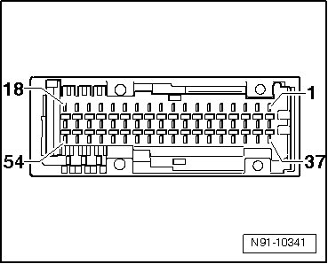

Terminals in 54-Pin Connector Overview
Terminals in 54-Pin Connector Overview

1 not used
2 CAN bus Low
3 CAN bus High
4 Audio signal shielding
5 Right front audio signal
6 not used
7 Left front audio signal
8 not used
9 Complete front shielding
10 not used
11 Front video signal, synchronization of vertical and horizontal picture signals
12 Video ground
13 Blue front video signal
14 Video ground
15 Green front video signal
16 Video ground
17 Red front video signal
18 Video ground
19 Terminal 31 negative power supply
20 Terminal 30 positive power supply
21-54 not used